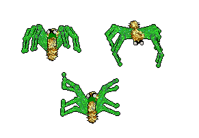
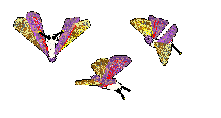
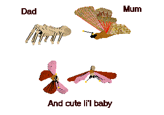
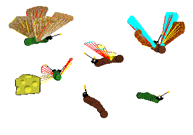

.
Arthropods, playscenes etc for your exoskeletal
Petz
~~~~~~~~~~~~~~~~~~~~~~~~~~~~~
For Insect and spider fanciers out there, I thought it would be a good idea to make it easy for you to find all the exoskeletal items that are on this site, so here they are with a separate section of their own :-)
Arthropodz for the Babyz game


Arthropodz, spiders, and butterflies for the
Catz games 3, 4 and 5


Go to Pinecone Cattery for a fantastic environment for
your spiders!
Butterfly Chaser's insect breedz and playscenes for the Dogz games
And last but by no means least,
Smarti's butterflies!
The first-ever butterflies, for dogz games, by Smarti;
with added sounds by yours truly. You can download the sounds from Smarti's
site or from here